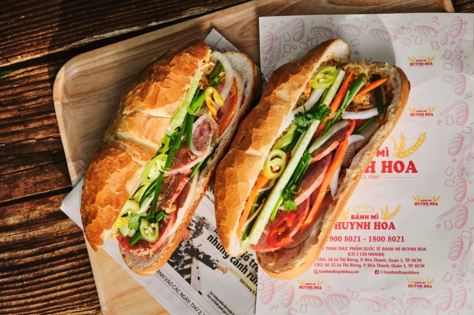
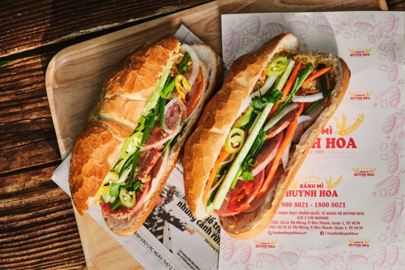

The Soul of S-Shape Land
走進越南

越南，這片呈S形展開的土地，是亞洲最迷人的祕境之一。從北部的蒼翠梯田到南部的湄公河三角洲，每一寸土地都散發著生命力。
在這裡，您能遇見世界上最友善的人民，品嚐享譽全球的傳統美食。這不僅是一個目的地，更是一場洗滌心靈的藝術之旅。
DISCOVER THE CHARM OF VIETNAM
一場結合自然奇觀、悠久歷史與人文溫情的非凡旅程
越南，這片呈S形展開的土地，是亞洲最迷人的祕境之一。從北部的蒼翠梯田到南部的湄公河三角洲，每一寸土地都散發著生命力。
在這裡，您能遇見世界上最友善的人民，品嚐享譽全球的傳統美食。這不僅是一個目的地，更是一場洗滌心靈的藝術之旅。

越南美食非常丰富，也很吸引人。 其中，卷粉、煎饼和越南法棍面包都非常有名。 越南卷粉是用米粉做的，又薄又软。 里面有肉和木耳，配鱼露一起吃。 越南煎饼外皮金黄又酥脆。 里面有虾、肉和豆芽，常常和生菜一起吃。 越南法棍面包是很常见的街头美食。 面包很脆，里面有肉、肝酱、蔬菜和酱料。 这三种美食很好地表现了越南的饮食文化。。
[ 點擊展開更多圖片 ] 

越南文化历史悠久，深受农业文明的影响.越南有许多传统节日，比如春节和中秋节.越南的傳統服裝是奧黛.越南人熱情好客，對朋友非常友善.有悠久的尊祖敬宗傳統。越南文化重視禮貌和尊重長輩。
[ 點擊展開更多圖片 ]感受越南人民的堅韌與熱情。那一抹純真微笑，是旅程中最美的收穫。越南人民以勤劳、吃苦耐劳和坚强的进取精神而著称。经历了许多充满困难的历史阶段，越南人始终团结一致，热爱祖国，坚韧不拔地守护着自己的家园。不仅如此，越南人民还非常友好、开放且热情好客。来到越南旅游时，游客很容易通过当地人真诚的微笑、亲切的问候以及乐于助人的态度，感受到一种温暖而亲近的氛围。正是这种真挚与热情，给国际友人留下了深刻而美好的印象。
[ 點擊展開更多圖片 ]